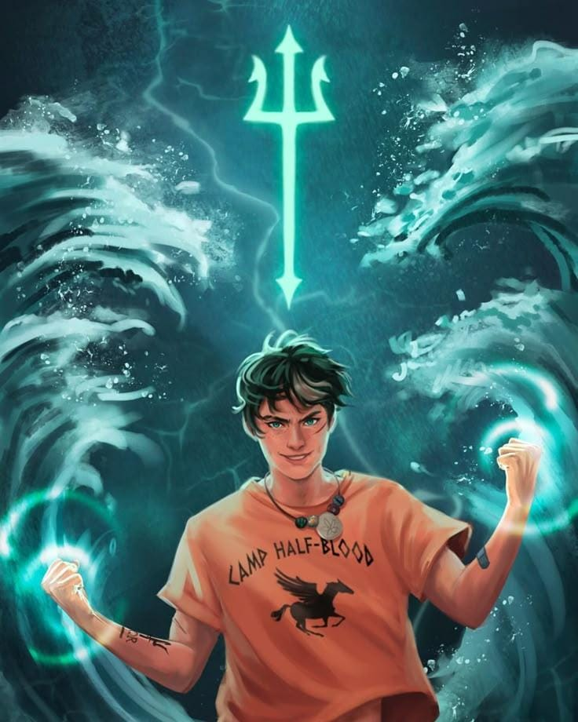
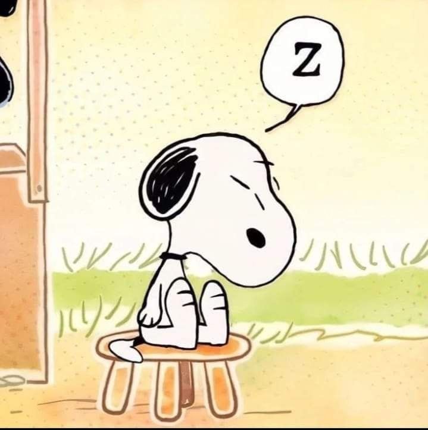

Sobre mim
Oi, meu nome é Eloah
Nasci em 21/04/2009 na cidade de Passos MG.
Estudo na Escola estadual São José, faço curso de informática e estou no segundo ano do ensino médio.
Nesse ano e principalmente no próximo quero dar o meu melhor e me esforçar ao máximo nos estudos, poder fazer a faculdade que tanto quero e dar um orgulho maior pras pessoas que amo e me importo muito.
Sou uma pessoa gentil e bondosa, um pouco sentimental. Sou da área de humanas, gosto muito de História, Português e Filosofia.
Gosto muito de assistir filmes, meus favoritos são as vantagens de ser invisível e Drácula
Meus hobbies
- dormir
- jogar volei
- ouvir musica
- Lógica de programação
- desenhar
- ler
Foto dos meus personagens favoritos
Tsukishima
Homem Aranha
Percy Jackson
Feiticeira Escarlate
Snoop
Shikamaru